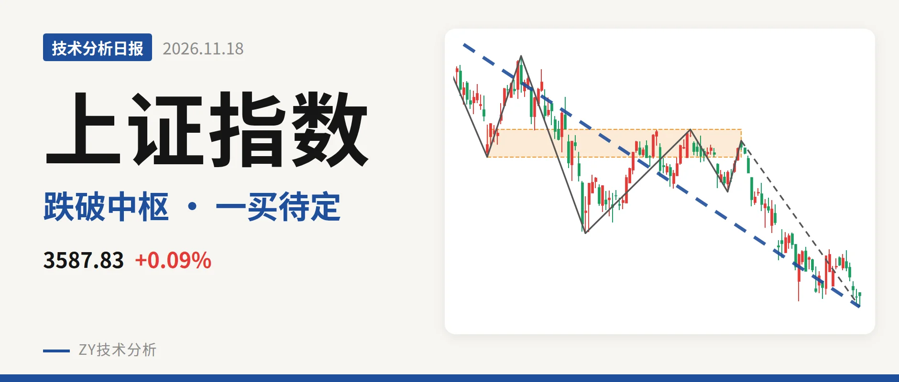
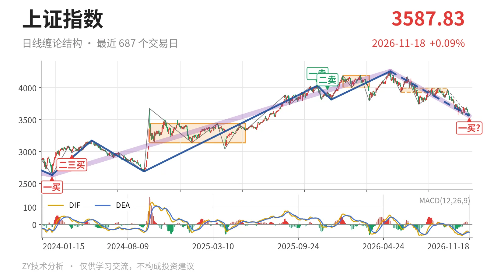
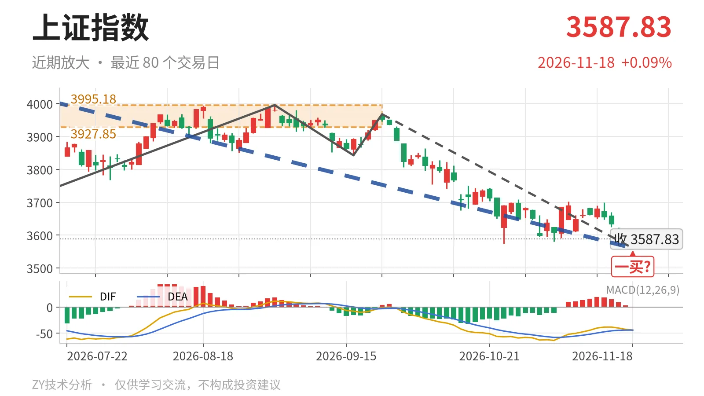

上证指数｜跌破3928点，一买仍是暂定

最近日线中枢 3927.85—3995.18点，收盘位于中枢之下
一句话：日线下跌笔延续，价格低于中枢下沿8.7%，无底背驰
📉 走势结构：上涨段未坏，日线回调还在延续
更大级别里，2024年2月5日至2026年5月14日的上涨段尚未被反向线段破坏，当前只宜看作上涨段中的调整。日线线段上，5月14日至11月18日的下跌线段从4258.86点落到3560.45点，跌约16.4%，内含7笔，仍在延续。前一段2025年12月16日至2026年5月14日的上涨线段已经结束。线段内部的最近日线下跌笔从3967.68点开始，已运行36根K线，尚无反向笔破坏。结构性质是日线回调进行中，还未转折。

📍 中枢与位置：跌破最近中枢下沿，中枢下移
最近日线笔中枢为6月8日至9月22日的3927.85—3995.18点，该中枢还没完成。最新收盘3587.83点，低于下沿3927.85点约8.7%，处在中枢下方。此前1月14日至3月23日的中枢在4002.78—4190.87点，中轴4096.82点；最近中枢中轴降至3961.51点，中枢下移明显。MACD的DIF仍在零轴下方，DIF -44.2、DEA -44.3，柱体0.3，反弹修复力度弱。价格要重新转强，先得回到该中枢内。
🧭 买卖点：11月18日一买只是暂定，旧卖点级别已降
11月18日的3560.45点是暂定的一买。它所在的9月22日至11月18日下跌笔仍在延续，这笔不结束，该一买还会随延伸而变化。2025年11月14日一卖4034.08点、2025年12月8日二卖3936.31点，之后都被2026年5月14日的4258.86点新高破坏。这两个卖点只对应更小级别。当前日线笔级别还没有已成立的一买。

⚡ 背驰：当前下跌笔无底背驰，力度仍大于前段
9月22日至11月18日的下跌笔，绿柱面积444，DIF低点-64.0。对比6月23日至7月20日的下跌笔，绿柱面积289，DIF低点-61.8。当前笔创出新低3560.45点，但绿柱面积更大、DIF低点更低。这是新低且力度同步放大，不是“新低不新弱”的底背驰结构。暂定一买缺乏力度支持。
🧱 关键位置观察：反抽不回3928点构成三卖，结构偏弱
当前处最近日线笔中枢下方，反抽若回不到3928点附近，结构上构成三卖。若能重新站上3928点并回到中枢内，这波下跌更可能只是中枢扩展。下方看线段中枢上沿3418.95点附近。若跌破3419点，大级别上涨结构转为更大级别中枢震荡的概率上升。综合看，日线结构偏弱。
⚠️ 本文为基于公开行情数据的缠论技术结构记录，由程序自动计算并生成，仅供学习交流，不构成任何投资建议。市场有风险，投资需谨慎。